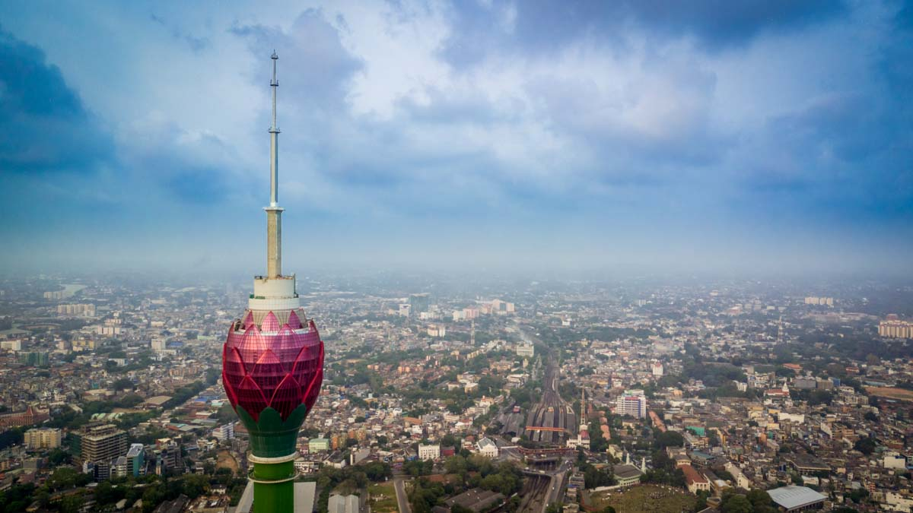
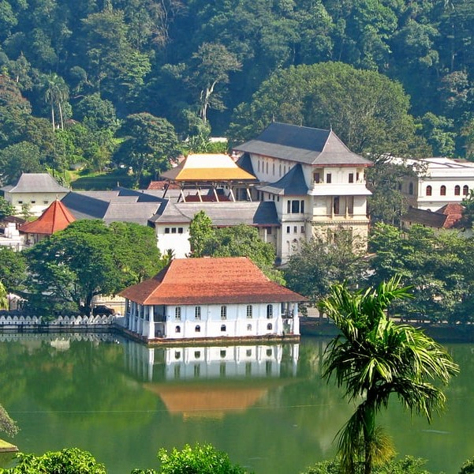
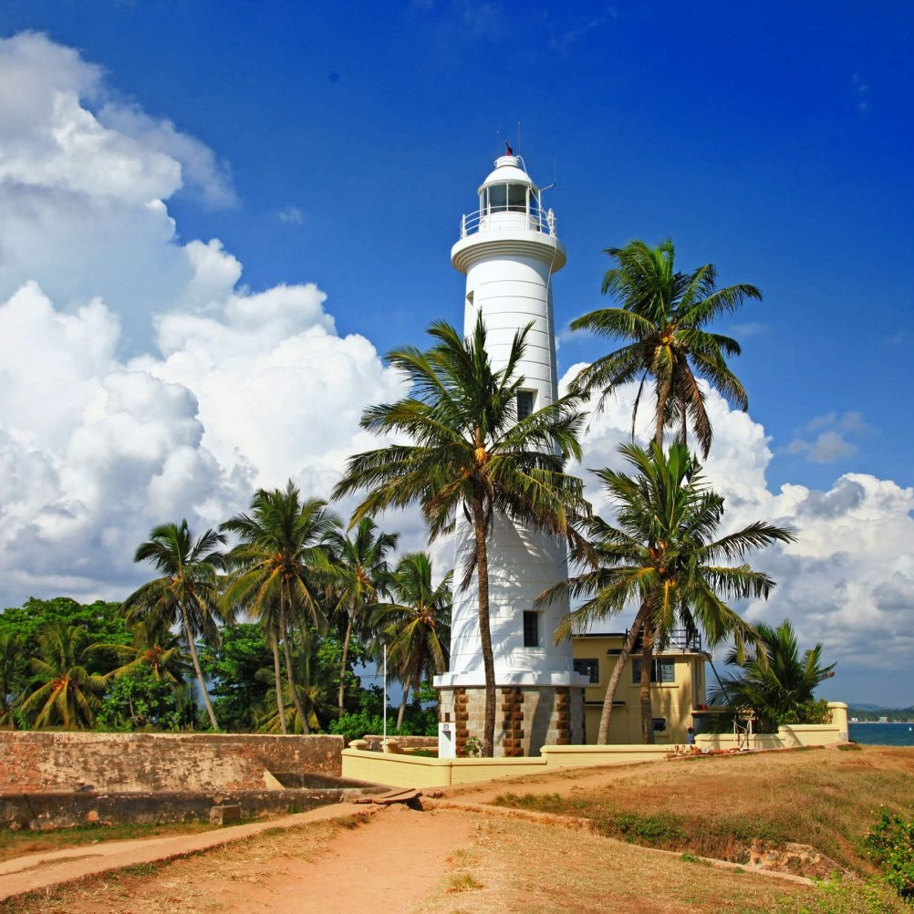
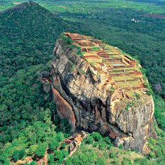

Situated in the western province of Sri Lanka Colombo is the main administrative and economic center of the island. The city was the capital for over two hundred years until the capital was shifted to nearby Sri Jayawardenepura. Its architecture has been influenced by Portuguese, Dutch, and British Colonial colonization.

The scenic city of Kandy.
This sacred site, popularly known as the city of Senkadagalapura, was the last capital of the Sinhala kings whose patronage enabled the Dinahala culture to flourish for more than 2,500 years until the occupation of Sri Lanka by the British in 1815. It is also the site of the Temple of the Tooth Relic, which is a famous pilgrimage site.

The coastal city Galle.
Founded in 16th century by the Portuguese, Galle reached the height of its development in the 18th century, before the arrival of the British. It is the best example of a fortified city built by Europeans in South and South-East Asia, showing the interaction between European architectural styles and South Asiantraditions.

The historic city Sigiriya.
The ruins of the capital built by the parricidal King Kassapa I (477–95) lie on the steep slopes and at the summit of a granite peak standing some 180m high . A series of galleries and staircases emerging from the mouth of a gigantic lion constructed of bricks and plaster provide access to the site.

The exquisite city Yala.
Nestled in the south-eastern corner of Sri Lanka, Yala National Park is the island’s principle national park and offers the greatest diversity of animal and birdlife in the country. The habitats found in the park are wide-ranging, from freshwater lakes to beaches, rocky outcrops to green plains and jungle.